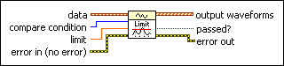
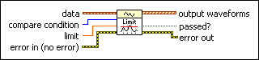

Waveform Scalar Limit Comparison VI
Owning Palette: Analog Waveform VIs and Functions
Requires: Base Development System
Compares the waveform data values to a scalar value.

 Add to the block diagram Add to the block diagram |
 Find on the palette Find on the palette |
Owning Palette: Analog Waveform VIs and Functions
Requires: Base Development System
Compares the waveform data values to a scalar value.

| Add to the block diagram |
Find on the palette |
 |
data is the waveform that includes the data you want to compare to a specified limit. | ||||||||
 |
compare condition indicates whether the highest or lowest data value of waveform must be lower than and/or equal to or higher than and/or equal to the number in limit.
|
||||||||
 |
limit specifies the number to which you want to compare the highest or lowest data value in the waveform. | ||||||||
 |
error in describes error conditions that occur before this node runs. This input provides standard error in functionality. | ||||||||
 |
output waveforms returns two waveforms in an array. The first is a copy of data. The second is the failure waveform, which is a copy of data with all elements that passed replaced by NaN. All valid elements are failures. | ||||||||
 |
passed? indicates whether the highest or lowest data value met the compare condition based on the limit. FALSE indicates the highest or lowest data value did not meet the comparison. | ||||||||
 |
error out contains error information. This output provides standard error out functionality. |
passed? is FALSE if any point in the waveform fails the specified comparison. For example, passed? is FALSE if any waveform point is greater than the limit value when compare condition is set to <.
This VI also returns an array of waveforms where the first waveform is the original data. The second waveform contains the data with the failed limit comparison values replaced by NaN.
Refer to the Waveform - Scalar Limit Comparison VI in the labview\examples\Waveform directory for an example of using the Waveform Scalar Limit Comparison VI.
 Open example Find related examples
Open example Find related examples